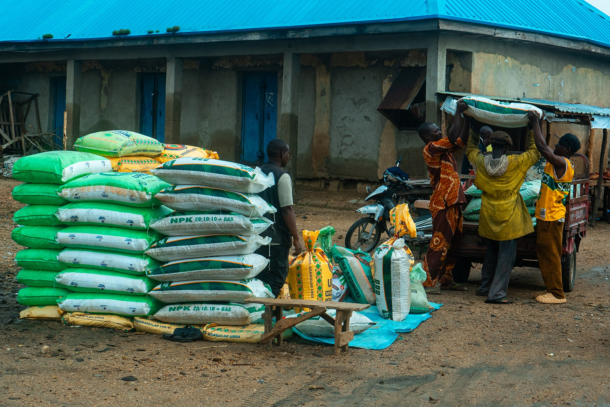

Agricultural Inputs
Certified fertilizers, seeds, crop protection, animal feeds and implements — the same inputs we trust on our own farms, now available to you.
Inputs That Actually Perform
Fake and adulterated inputs destroy yields. Jodozo sources fertilizers, seeds and agrochemicals from verified manufacturers, stores them under proper conditions and sells with usage guidance. Farmers who buy from us get agronomic support from our team — because your harvest is our reputation.
- Sourced only from verified manufacturers
- Properly stored and handled products
- Free usage advice with every purchase
What We Stock
Fertilizers
NPK, urea, organic and specialty blends.
Certified Seeds
Improved maize, rice, sorghum and vegetable seed.
Crop Protection
Pesticides, herbicides and fungicides.
Animal Feeds
Poultry, cattle and fish feed — our own formulations.
Farm Implements
Ploughs, harrows, planters and hand tools.
Agrochemicals
Foliar feeds, soil conditioners and adjuvants.
Getting Inputs Is Easy
Send Enquiry
Tell us what you need — type, grade and quantity.
Get a Quote
We confirm availability, price and delivery.
Confirm Order
Pay on invoice — individual, co-op or institutional.
Delivery & Advice
Collect or get doorstep delivery plus usage guidance.
Stock Your Farm for the Season
Cooperatives and input dealers enjoy wholesale pricing.